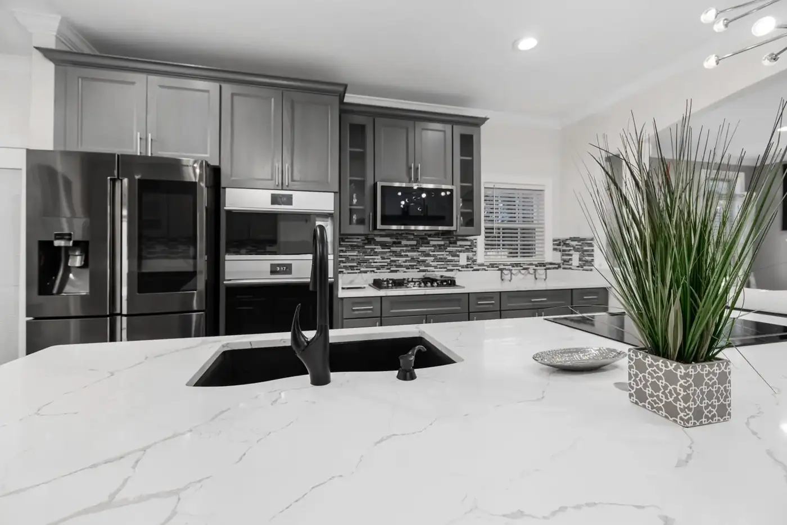

Granite worktops
Bespoke granite worktops cut, polished and fitted.
Steven McDonald Granite Ltd · Scottish Borders, Scotland
Granite worktops, Quartz & Silestone, Curved stonework — Scottish Borders, Scotland.
What we do
Bespoke granite worktops cut, polished and fitted.
A wide range of quartz and Silestone surfaces for kitchens and bars.
Unique curves shaped into the stone — a speciality of the workshop.
Supply and fit of the latest sinks, taps and hobs to complement your worktops.
About
Steven McDonald Granite Ltd is a family-run business producing high-quality granite, Silestone and quartz worktops. Based in the Scottish Borders, they supply and fit across Scotland, Edinburgh and Northumberland and nationwide around the UK, handling everything from estimating through cutting, polishing and fitting. Showroom open by appointment.
Gallery
Sample imagery from Pexels standing in for Steven McDonald Granite Ltd projects — to be replaced with real project photos.



Reviews
Service area
Enquire
Tell us about your project and we’ll get back to you.
What this preview improves